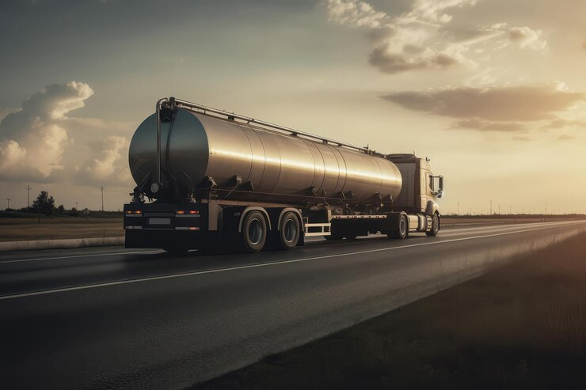
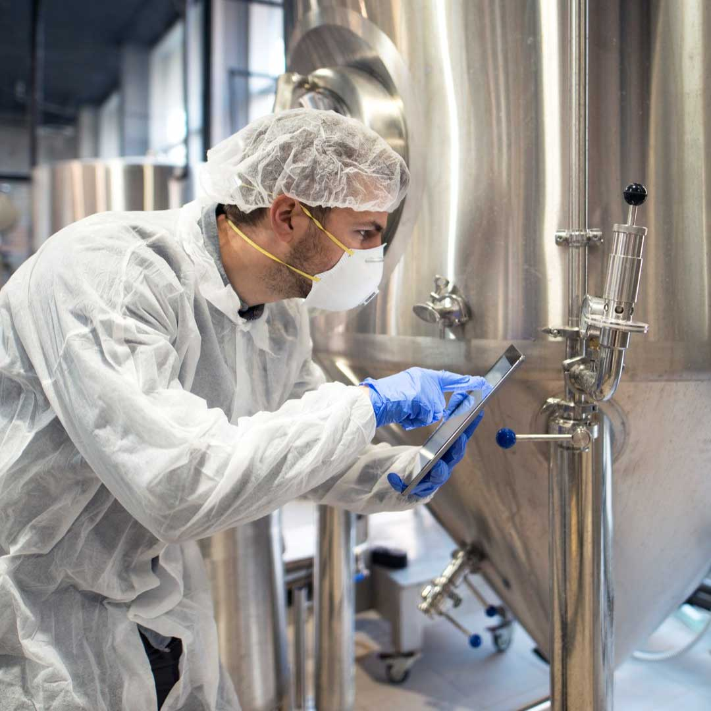

Na indústria do leite, a coleta e o maquinário utilizado são fundamentais para garantir a qualidade do produto desde a fazenda até o consumidor final. Aqui estão os principais processos e equipamentos envolvidos:
Coleta de Leite:
Ordenha:
Ordenha Manual: Ainda comum em pequenas propriedades, envolve a extração manual do leitediretamente das vacas. Ordenha Mecânica: Utiliza máquinas de ordenha que aplicam vácuo aos tetos das vacas, extraindo oleite de forma eficiente e higiênica. Essa é a forma mais utilizada em propriedades de médio egrande porte.

Tanques de Resfriamento:
Após a ordenha, o leite é armazenado em tanques de resfriamento, onde a temperatura érapidamente reduzida para cerca de 4°C. Isso evita a proliferação de bactérias e mantém aqualidade do leite até o transporte.
Transporte:
Caminhões-tanque Isotérmicos: Especialmente projetados para transportar o leite das fazendasaté os laticínios, esses caminhões mantêm o leite resfriado e protegido durante o transporte.
Maquinário Usado na Coleta e Processamento:
Sistemas de Ordenha Automatizados:
Ordenhadeiras: Equipamentos que automatizam o processo de ordenha, podendo ser operados porrobôs em sistemas mais avançados. Eles garantem eficiência e reduzem o contato humano, minimizandoriscos de contaminação. Medidores de Produção: Dispositivos que monitoram a quantidade de leite produzida por cada animal,auxiliando na gestão do rebanho.
Sistemas de Limpeza CIP (Clean-In-Place):
Sistemas automáticos que limpam e esterilizam as máquinas de ordenha e os tanques deresfriamento sem a necessidade de desmontá-los. Isso garante a higiene do equipamento e aqualidade do leite.
Tanquistas:
Equipamento utilizado para realizar a coleta do leite nas fazendas e transportá-lo até aindústria. O leite é transferido do tanque de resfriamento na fazenda para o caminhão-tanque.
Detectores de Qualidade:
Equipamentos que medem a qualidade do leite, como a presença de antibióticos, células somáticase a contagem bacteriana, garantindo que o leite coletado atenda aos padrões de qualidade.
Pasteurizadores:
Máquinas que aquecem o leite a uma temperatura específica para eliminar patógenos, tornando-oseguro para consumo sem afetar seu valor nutricional. Esses equipamentos e processos são essenciais para garantir a segurança, a qualidade e aeficiência na produção de leite, desde a fazenda até o consumidor final.